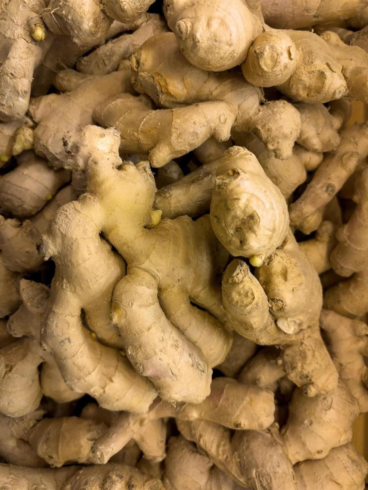

生姜
快速回答
生姜可以很好地加入抗炎饮食，因为它含有姜辣素和姜烯酚等化合物，这些成分已被用于抗炎相关研究。它也很容易经常使用，不管是加入餐食、汤，还是做成简单热饮。
它是什么
生姜（Zingiber officinale）是一种开花植物，人们主要食用它的根茎。它起源于东南亚，并在世界各地被用于烹饪和传统饮食。常见形式包括新鲜生姜、干姜粉、腌姜和蜜饯姜。
生姜常见于亚洲、印度、中东和加勒比等饮食中，可用于炒菜、咖喱、汤、茶、烘焙和饮品。它有温暖、辛香的味道，烹调后会更柔和。
为什么生姜是有帮助的选择
新鲜生姜富含姜辣素，尤其是 6-姜辣素。相关研究关注它们对前列腺素、白三烯等炎症通路的影响。生姜在干燥或加热后，一部分姜辣素会转化为姜烯酚。
生姜特别实用的地方，不只是研究本身，而是它很容易进入真实生活。你可以把它擦进汤、咖喱、炒菜、调味汁和温热饮品里，不需要重建整套餐食。
在许多烹饪香料中，生姜也有较多临床研究。较强证据集中在恶心缓解方面，其他小型研究则关注肌肉酸痛、骨关节不适和经期疼痛等。
关键营养和化合物
一汤匙左右的新鲜擦姜含有少量锰、维生素 C 和钾。每次用量中的微量营养素并不高，真正被关注的是姜辣素和姜烯酚等活性化合物。
潜在健康益处
- 提供姜辣素和姜烯酚等被用于抗炎活性研究的化合物。
- 在烹饪香料中，对恶心支持有相对较多临床研究。
- 可能对肌肉酸痛和关节不适提供温和支持。
- 不用太多额外工作，就能给餐食增加温暖风味。
- 新鲜、冷冻、干燥、粉末和泡饮形式都容易使用。
生姜怎么吃
- 把新鲜生姜擦进炒菜、咖喱和汤里。
- 用姜片泡热水 5 到 10 分钟，做简单姜茶。
- 把擦姜加入奶昔，搭配姜黄、香蕉或椰奶。
- 用腌姜搭配寿司或谷物碗。
- 用温热植物奶、姜黄和少量蜂蜜做姜黄姜饮。
- 把姜末加进酱油、芝麻油和米醋做调味汁。
购买和储存
选择表皮光滑紧实、有辛香气味的新鲜生姜。避免发皱、发软或发霉的部分。未去皮生姜可冷藏保存约 2 到 3 周，也可以冷冻保存，冷冻姜很容易擦碎。
FAQ
每天吃多少生姜合适？
研究中常见剂量与日常烹饪用量不同。对多数人来说，把生姜加入一两餐或一杯热饮，是比较现实的方式。高剂量可能让部分人消化不适。
新鲜生姜比姜粉更好吗？
新鲜生姜姜辣素较多，干姜粉和干姜中姜烯酚比例更高。两者都有活性成分。新鲜姜风味更明亮，姜粉更方便也更浓缩。
生姜能帮助关节炎吗？
一些小型临床研究显示生姜补充剂可能对骨关节疼痛有温和帮助，但结果并不一致。它可以作为饮食中的辅助选择，不应替代医疗照护。
生姜会和抗凝药相互作用吗？
高剂量生姜可能有轻度抗血小板作用。正在使用抗凝药的人，应和医生讨论生姜补充剂，而普通烹饪用量通常不是同一回事。
证据说明
生姜已有多种临床研究，较强证据集中在恶心方面。抗炎相关证据包括系统综述和炎症标志物研究，但许多研究使用的是浓缩补充剂，而不是普通烹饪用量。
本页将生姜作为抗炎饮食中可以辅助搭配的一种食物来介绍，而不是把它作为单独的治疗方法。